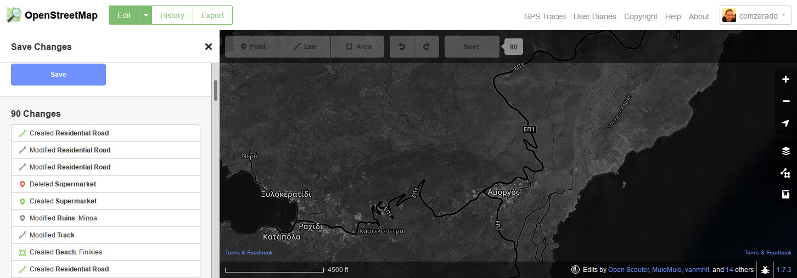

Greek islands are a great place for summer vacations. This year I visited Amorgos, part of the Cyclades island group, and had a short visit at Pano Koufonisi.
Being in a new place means you need some kind of map to guide you through the endless number of beaches, paths and villages. I've been using OpenStreetMap as a map source for a long time and occasionally I contribute back. OpenStreetMap is a collaborative project to create a free editable map of the world. Many people call it the Wikipedia of maps, and it is in some extent. In contrary with all the major industry map services, which utilize free labor from volunteer contributors and give nothing back, OpenStreetMap data are freely distributed to be used by anyone for any purpose.
You can find many places where OpenStreetMap has more rich data than other sources or read stories on how targeted mapping on specific incidents saved thousand of lives. But there are also many places where it lacks reliable data. Amorgos (and unfortunately many other Greek islands) is one of these cases.
During my vacations there I used the only equipment available (my phone) to keep notes that would help me later to enrich OpenStreetMap. I extensivly use Osmand as my main navigation tool so this was my first option of keeping notes. You can either add favorites to mark any POIs or use the notes plugin to take photos or record audio notes. Osmand has also an editing plugin that can help you edit data on the fly, but I prefer to do this later. If you are searching for a more simple app OSMtracker is a better choice, for tracking routes and keeping notes. If you don't have a smartphone during your vacations you can just use paper and pen. Field Papers will help you print the map area you are interested in and you can keep notes with a pen.
Getting back home I had many notes and plenty of work to do. OpenStretMap has a great in-browser editor and the Map Features (really long) wiki page can guide you through the supported map elements. I added/changed around 90 map elements (beaches, paths, roads, buildings, etc) and it took me about an hour. Less than a day later the changes were rendered to the live website and I could feel proud about my contributions :)
So did you enjoyed your vacations? Now start contributing to OpenStreetMap so more people can enjoy the travel to all the places you visited. Happy mapping :)

 diaspora*
diaspora*